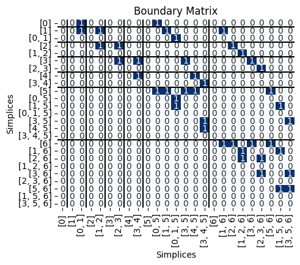
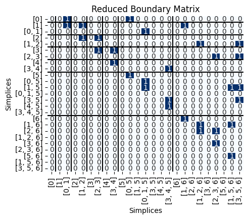

Lecture 11: Computing Persistent Homology#
Imports#
This tutorial will be built on teaching software I wrote to understand the standard persistence algorithm in a way that we can see the boundary matrices. Warning: This is not fast, optimized, or otherwise recommended for use in any real applications so don’t judge me. You need to download the file TeachingPersistence.py and save it to the same folder as this jupyter notebook in order to run.
import TeachingPersistence as Pers
# Standard imports
import matplotlib.pyplot as plt
import numpy as np
%matplotlib inline
The Persistence Algorithm#
As discussed last class, the persistence algorithm is given by the following. We have a function on a simplicial complex \(f:K \to \mathbb{R}\). Then we choose a compatible ordering of the simplices and built a matrix \(B\) giving the boundary information for a simplicial complex, with columns sorted in order of the filtration.
Let \(low(j)\) be the row index of the lowest one in column \(j\).
If column \(j\) is entirely 0, \(low(j)\) is \(-1\). (Note: it was
NaNin the previous slides)\(R\) is ``reduced’’ if \(low(j) \neq low(j')\) for any \(j \neq j'\) which are not entirely zero columns.
Then the reduction algorithm is:
Say we have a pair \((\sigma,\tau)\), where \(\tau\) is the row entry for the lowest one in \(\sigma\)’s column. If \(\sigma\) is a \(p\)-simplex, and \(\tau\) is a \((p+1)\)-simplex, then we know that a \(p\)-dimensional class was born with the addition of simplex \(\sigma\) and dies with the addition of simplex \(\tau\). In the \(p\)-dimensional persistence diagram, this means that we have a point in the diagram at \((f(\sigma),f(\tau))\).
Lower Star Filtration#
Let’s start with a simple example where we are doing the lower star filtration. By this I mean that if I tell you the function value for the vertices of some fixed simplicial complex \(K\):
then I assume that every other simplex’s function value is given by
Here’s a simplicial complex

and below I have chosen a function on the vertices.
# Vertex function values
f = {0: 8, 1: 13, 2:27, 3: 31, 4:38, 5: 52, 6: 60}
I’ll use this to make a Python function that will give me the filtration function value \(f(\sigma)\) for all the simplices, not just the vertices.
def f_val(sigma):
return max([f[v] for v in sigma])
print(f"Example, f([0,1,5]) = {f_val([0,1,5])}")
Example, f([0,1,5]) = 52
To store the simplicial complex, I can just list off all the simplices in the complex, order doesn’t matter for the moment.
# List of simplices
S = [[0], [1], [2], [3], [4], [5], [6],
[0,1], [1,2], [2,3], [3,4], [4,5], [0,5],
[1,5], [3,5], [2,6], [3,6], [5,6], [1,6],
[0,1,5],[3,4,5], [2,3,6], [1,5,6], [1,2,6], [3,5,6]]
First, I’m going to find a compatible ordering of my simplices. Internally, this is done using something called colexicographic ordering, which works because I’m doing a lower star filtration. In usual cases, you’d have to come up with a compatible ordering depending on the type of filtration you’re using.
S = Pers.colex_order(S,f)
# Print out the simplices in the order I've now picked
for sigma in S:
print('f(sigma):', max([f[v] for v in sigma]), '\tsigma:', sigma, )
f(sigma): 8 sigma: [0]
f(sigma): 13 sigma: [1]
f(sigma): 13 sigma: [0, 1]
f(sigma): 27 sigma: [2]
f(sigma): 27 sigma: [1, 2]
f(sigma): 31 sigma: [3]
f(sigma): 31 sigma: [2, 3]
f(sigma): 38 sigma: [4]
f(sigma): 38 sigma: [3, 4]
f(sigma): 52 sigma: [5]
f(sigma): 52 sigma: [0, 5]
f(sigma): 52 sigma: [1, 5]
f(sigma): 52 sigma: [0, 1, 5]
f(sigma): 52 sigma: [3, 5]
f(sigma): 52 sigma: [4, 5]
f(sigma): 52 sigma: [3, 4, 5]
f(sigma): 60 sigma: [6]
f(sigma): 60 sigma: [1, 6]
f(sigma): 60 sigma: [2, 6]
f(sigma): 60 sigma: [1, 2, 6]
f(sigma): 60 sigma: [3, 6]
f(sigma): 60 sigma: [2, 3, 6]
f(sigma): 60 sigma: [5, 6]
f(sigma): 60 sigma: [1, 5, 6]
f(sigma): 60 sigma: [3, 5, 6]
Next, I can get the boundary matrix:
B = Pers.boundary(S)
Pers.drawMat(B, S)
plt.title('Boundary Matrix');

Next, we can get the reduced version of \(B\).
R,V,low = Pers.standard_persistence_reduction(B,return_type = 'V')
Pers.drawMat(R, S);

This code will also return the matrix \(V\), where \(R = BV\). We can double check that the result actually works.
check = np.mod(R-B@V,2)
print('Check that R = BV:', np.all(check == 0))
Check that R = BV: True
This code also keeps track of the lowest 1’s, which are exactly what we need for the points in the persistence diagram. Here’s the low output from above, with the matrix drawn below.
print('low:', low)
Pers.drawMat(R, S);
low: [-1 -1 1 -1 3 -1 5 -1 7 -1 9 -1 11 -1 -1 14 -1 16 -1 18 -1 20 -1 22
13]
For interpretation, -1 means there is no lowest one, so the column is empty. So we have the following interpretation.
for i in range(len(S)):
if low[i] != -1:
print(f'Simplex {S[i]} is negative, kills the feature born at {S[low[i]]}')
else:
print(f'Simplex {S[i]} is positive, creates a new feature.')
Simplex [0] is positive, creates a new feature.
Simplex [1] is positive, creates a new feature.
Simplex [0, 1] is negative, kills the feature born at [1]
Simplex [2] is positive, creates a new feature.
Simplex [1, 2] is negative, kills the feature born at [2]
Simplex [3] is positive, creates a new feature.
Simplex [2, 3] is negative, kills the feature born at [3]
Simplex [4] is positive, creates a new feature.
Simplex [3, 4] is negative, kills the feature born at [4]
Simplex [5] is positive, creates a new feature.
Simplex [0, 5] is negative, kills the feature born at [5]
Simplex [1, 5] is positive, creates a new feature.
Simplex [0, 1, 5] is negative, kills the feature born at [1, 5]
Simplex [3, 5] is positive, creates a new feature.
Simplex [4, 5] is positive, creates a new feature.
Simplex [3, 4, 5] is negative, kills the feature born at [4, 5]
Simplex [6] is positive, creates a new feature.
Simplex [1, 6] is negative, kills the feature born at [6]
Simplex [2, 6] is positive, creates a new feature.
Simplex [1, 2, 6] is negative, kills the feature born at [2, 6]
Simplex [3, 6] is positive, creates a new feature.
Simplex [2, 3, 6] is negative, kills the feature born at [3, 6]
Simplex [5, 6] is positive, creates a new feature.
Simplex [1, 5, 6] is negative, kills the feature born at [5, 6]
Simplex [3, 5, 6] is negative, kills the feature born at [3, 5]
Pairing these off, we have the following:
pairs = []
for i in range(len(S)):
if low[i] != -1:
pairs.append((S[low[i]], S[i]))
else:
if i not in low:
pairs.append((S[i], None))
for p in pairs:
print(p)
([0], None)
([1], [0, 1])
([2], [1, 2])
([3], [2, 3])
([4], [3, 4])
([5], [0, 5])
([1, 5], [0, 1, 5])
([4, 5], [3, 4, 5])
([6], [1, 6])
([2, 6], [1, 2, 6])
([3, 6], [2, 3, 6])
([5, 6], [1, 5, 6])
([3, 5], [3, 5, 6])
This is actually also a function in the script so I can stop writing that function.
pairs = Pers.get_pairs(low, S)
pairs
[([0], None),
([1], [0, 1]),
([2], [1, 2]),
([3], [2, 3]),
([4], [3, 4]),
([5], [0, 5]),
([1, 5], [0, 1, 5]),
([4, 5], [3, 4, 5]),
([6], [1, 6]),
([2, 6], [1, 2, 6]),
([3, 6], [2, 3, 6]),
([5, 6], [1, 5, 6]),
([3, 5], [3, 5, 6])]
Now if I want the actual persistence points, for each pair \((\sigma, \tau)\), we have a persistence point at \((f(\sigma), f(\tau))\) so long as those two values aren’t equal.
PersPoints = []
for p in pairs:
if p[1] is not None and f_val(p[0]) != f_val(p[1]):
print(f'Pair: ({f_val(p[0])}, {f_val(p[1])})')
PersPoints.append((f_val(p[0]), f_val(p[1])))
elif p[1] is None:
print(f'Pair: ({f_val(p[0])}, infinity)')
PersPoints.append((f_val(p[0]), np.inf))
else:
print(f'Pair: ({f_val(p[0])}, {f_val(p[1])}) - ignored since same value')
Pair: (8, infinity)
Pair: (13, 13) - ignored since same value
Pair: (27, 27) - ignored since same value
Pair: (31, 31) - ignored since same value
Pair: (38, 38) - ignored since same value
Pair: (52, 52) - ignored since same value
Pair: (52, 52) - ignored since same value
Pair: (52, 52) - ignored since same value
Pair: (60, 60) - ignored since same value
Pair: (60, 60) - ignored since same value
Pair: (60, 60) - ignored since same value
Pair: (60, 60) - ignored since same value
Pair: (52, 60)
Again, I actually have this inside the script.
Pers.get_pers_points(pairs, f_val)
[(8, inf), (52, 60)]
Exercises#
Q1#
What happens if the function is different? Try computing the reduced matrix for the lower star filtration of these two functions:
f_1 = {0: 1, 1: 3, 2:5, 3: 7, 4:9, 5: 11, 6: 13}f_2 = {0: 8, 1: 13, 2: 27, 3: 31, 4: 38, 5: 52, 6: 15}
What changes (if any) occur in the simplex pairing?
What changes (if any) occur in the persistence diagram?
What changed in the function that caused (or didn’t cause) differences? `
# Your code here
Q2#
Compute the 0- and 1-dimensional persistence diagram for the following simplicial complex filtration.

Note that this is not a lower star filtration, so you’ll just have to make a list S_new of the simplces that is already sorted in the right order.
# Your code here